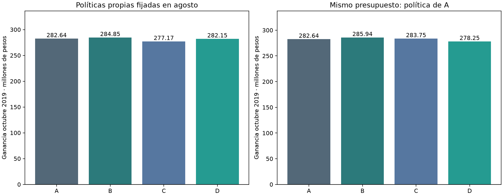
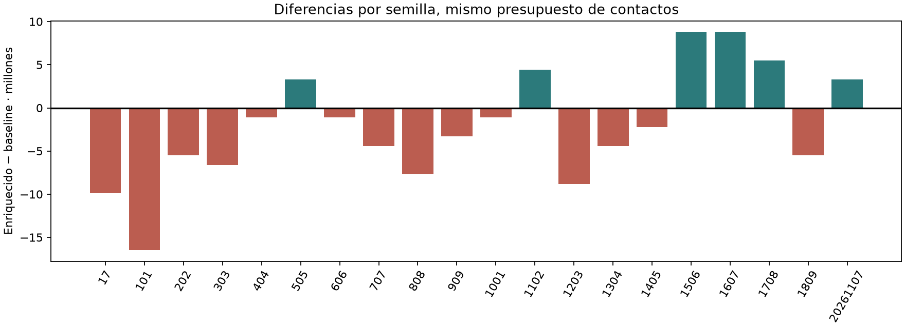

Corrida A/B/C/D: resultados locales sobre octubre de 2019 completo. No son resultados públicos o privados de Kaggle ni la ganancia de C3 en 2021.
B obtiene la mayor ganancia con su política fijada en agosto: $284.845.000, $2.200.000 más que A. A igual presupuesto de A, su diferencia es $3.300.000. Sin embargo, la versión enriquecida gana sólo 6 de 20 comparaciones pareadas a ese presupuesto y su diferencia media es $-2.200.000. El resultado favorable de la semilla principal no es una mejora consistente. C y D no superan a sus modelos individuales con sus políticas propias. C mejora ligeramente el ranking al igualar contactos, pero pierde ganancia con su corte elegido en agosto. No se justifica adoptar automáticamente las variables o los ensembles por esta corrida. Falta aislar variables de reoptimización y validar temporalmente fuera de los períodos observados.
¿Mejora la ganancia al agregar 43 variables intrames de C3 al B2 de Ale? ¿Mejora al promediar 20 modelos? Se estudian por separado y juntas, con el mismo calendario, target y fórmula económica.
Las 43 variables son 27 ratios monto/operaciones y 16 sumas Visa+Master. Fórmulas verificadas contra C3. Las sumas requieren ambas marcas finitas. No se transfirió toda la historia ni toda la receta C3. Entrenamiento: marzo–junio 2019 completo; validación: agosto; evaluación: octubre. Target de AUC: BAJA+1 y BAJA+2. Ganancia: sólo BAJA+2.
Se ejecutaron 20 trials por representación y luego 20 semillas con parámetros y árboles fijos de su trial elegido por AUC. A/B cambian representación y parámetros: la comparación es entre recetas reoptimizadas. C/A y D/B comparan ensemble y una semilla previamente fijada. No se seleccionó una semilla ganadora.
| Representación | trees | best_trial | num_leaves | learning_rate | min_data_in_leaf | feature_fraction | bagging_fraction |
|---|---|---|---|---|---|---|---|
| baseline | 298 | 10 | 72 | 0.023909 | 2355 | 0.969996 | 0.764297 |
| enriquecido | 249 | 18 | 68 | 0.024632 | 2269 | 0.767685 | 0.979009 |
Comunes: bagging_freq=1, max_bin=255, deterministic=true, force_col_wise=true; sin muestreo de filas fuera del bagging interno del modelo. Cada representación mantiene sus parámetros y árboles en las 20 semillas.
| Brazo | Variables | Modelos | AUC agosto | Contactos agosto | Contactos octubre | Ganancia con política propia | BAJA+2 detectadas | Contactos comunes | Ganancia a igual presupuesto | Ganancia a 11.000 |
|---|---|---|---|---|---|---|---|---|---|---|
| A | 722 | 1 | 0.933028 | 4899 | 5042 | 282645000 | 383 | 5042 | 282645000 | 222200000 |
| B | 765 | 1 | 0.932108 | 4627 | 4762 | 284845000 | 378 | 5042 | 285945000 | 220000000 |
| C | 722 | 20 | 0.932658 | 3460 | 3561 | 277172500 | 341 | 5042 | 283745000 | 223300000 |
| D | 765 | 20 | 0.931942 | 4334 | 4460 | 282150000 | 368 | 5042 | 278245000 | 223300000 |
gain_policy: ganancia con la política propia del brazo. gain_common_A: ganancia con la cantidad de contactos elegida por A. gain_11000: referencia secundaria a 11.000. Todas las ganancias en pesos.

Un delta positivo es mejora observada en este mes, no prueba estadística ni promesa de ganancia futura. Si el signo cambia al igualar contactos, cambia la interpretación: la política y el ranking no aportan lo mismo.
| Métrica | Comparación | Diferencia |
|---|---|---|
| Ganancia con política propia | B-A | 2200000 |
| Ganancia con política propia | C-A | -5472500 |
| Ganancia con política propia | D-B | -2695000 |
| Ganancia con política propia | D-C | 4977500 |
| Ganancia con política propia | D-A | -495000 |
| Ganancia a igual presupuesto | B-A | 3300000 |
| Ganancia a igual presupuesto | C-A | 1100000 |
| Ganancia a igual presupuesto | D-B | -7700000 |
| Ganancia a igual presupuesto | D-C | -5500000 |
| Ganancia a igual presupuesto | D-A | -4400000 |
| Ganancia a 11.000 | B-A | -2200000 |
| Ganancia a 11.000 | C-A | 1100000 |
| Ganancia a 11.000 | D-B | 3300000 |
| Ganancia a 11.000 | D-C | 0 |
| Ganancia a 11.000 | D-A | 1100000 |
| Representación | Media | Mediana | Desvío | Mínimo | Máximo |
|---|---|---|---|---|---|
| baseline | 282,700,000.000000 | 282,645,000.000000 | 3,818,442.090696 | 271645000 | 290345000 |
| enriquecido | 280,500,000.000000 | 280,445,000.000000 | 4,938,407.478231 | 270545000 | 289245000 |
Resumen descriptivo de las 20 ganancias individuales al presupuesto común. Máximo y mínimo no se usan para seleccionar semillas ni reemplazar A/B.
| Métrica | mean_delta | median_delta | sd_delta | wins | ties | losses | note |
|---|---|---|---|---|---|---|---|
| Ganancia a igual presupuesto | -2,200,000.000000 | -2,750,000.000000 | 6,483,176.609300 | 6 | 0 | 14 | Same month; seeds are not independent temporal samples |

El promedio de ganancias de las semillas no es la ganancia del ensemble. El ensemble promedia scores y recién después ordena y selecciona clientes.
| Comparación | Contactos | Permanecen | Entran | Salen | BAJA+2 que entran | BAJA+2 que salen | Diferencia de ganancia |
|---|---|---|---|---|---|---|---|
| B-A | 5042 | 4558 | 484 | 484 | 14 | 11 | 3300000 |
| C-A | 5042 | 4729 | 313 | 313 | 8 | 7 | 1100000 |
| D-B | 5042 | 4737 | 305 | 305 | 6 | 13 | -7700000 |
| D-C | 5042 | 4789 | 253 | 253 | 5 | 10 | -5500000 |
| D-A | 5042 | 4643 | 399 | 399 | 9 | 13 | -4400000 |
| B-A | 11000 | 10064 | 936 | 936 | 11 | 13 | -2200000 |
| C-A | 11000 | 10414 | 586 | 586 | 9 | 8 | 1100000 |
| D-B | 11000 | 10482 | 518 | 518 | 9 | 6 | 3300000 |
| D-C | 11000 | 10506 | 494 | 494 | 5 | 5 | 0 |
| D-A | 11000 | 10222 | 778 | 778 | 9 | 8 | 1100000 |
A igual número de contactos, cada acierto neto adicional suma $1.100.000. Se muestran entradas y salidas del conjunto seleccionado, sin identificar clientes. Es una explicación contable del cambio observado, no atribución causal a variables individuales.
Cada brazo elige en agosto el máximo de ganancia, incluyendo cero contactos, y transfiere su fracción a octubre con redondeo hacia abajo. Empates de score: identificador ascendente. Los cortes fueron congelados antes de abrir octubre en esta corrida. No se impuso el rango 3.600–5.700 ni se buscó un corte óptimo mirando octubre. Los 11.000 contactos siguen siendo una referencia válida.
Igualdad exacta del nuevo A con los scores históricos de B2: agosto True; octubre True.
Se reprodujeron los scores históricos de B2 en agosto y su curva completa de octubre. Los $282.645.000 históricos a 5.042 contactos se mantienen como antecedente: la nueva política usa floor, mientras la anterior redondeaba al entero más cercano, por lo que puede variar un contacto sin variar el modelo.
Se verificaron 40 modelos por hash y número de árboles, semillas, media exacta de scores, políticas de agosto y ganancias recalculadas desde las predicciones. Controles finales.
| semilla | variables_nuevas_usadas | porcentaje_importancia_interna |
|---|---|---|
| 1708 | 37 | 4.992647 |
| 20261107 | 37 | 4.867500 |
| 1506 | 37 | 5.171368 |
| 1102 | 38 | 4.803201 |
| 707 | 38 | 5.005256 |
| 808 | 37 | 4.993837 |
| 1405 | 37 | 5.006586 |
| 1607 | 38 | 5.479007 |
| 17 | 37 | 4.882301 |
| 202 | 37 | 4.766725 |
| 1001 | 37 | 4.833695 |
| 909 | 38 | 4.731735 |
| 1304 | 38 | 4.893493 |
| 1809 | 39 | 4.810913 |
| 303 | 38 | 4.935277 |
| 606 | 37 | 4.976555 |
| 1203 | 37 | 4.952846 |
| 101 | 39 | 4.699888 |
| 404 | 39 | 5.027907 |
| 505 | 39 | 5.368663 |
Importancia interna de LightGBM: no es porcentaje de ganancia económica ni efecto causal. Usar una variable en árboles no demuestra que mejore la selección de contactos.
Antes del primer trial completado se corrigió la declaración de categorías en validación. Durante el entrenamiento se detectó que la lista inicial tenía 19 semillas pese al diseño de 20: se agregó 1809, siguiendo la secuencia numérica, sin reemplazar semillas según su desempeño. Se preservaron los 19 modelos completos del baseline. Esta corrección ocurrió antes del congelamiento y de abrir octubre en esta corrida. Las firmas anteriores y el incidente se conservaron; la verificación final exige 20 semillas únicas por representación y 40 modelos. Ver IMPLEMENTACION.txt y el historial Git.
Reproducir · Protocolo previo · 43 variables · Resultados CSV · Guion para el video